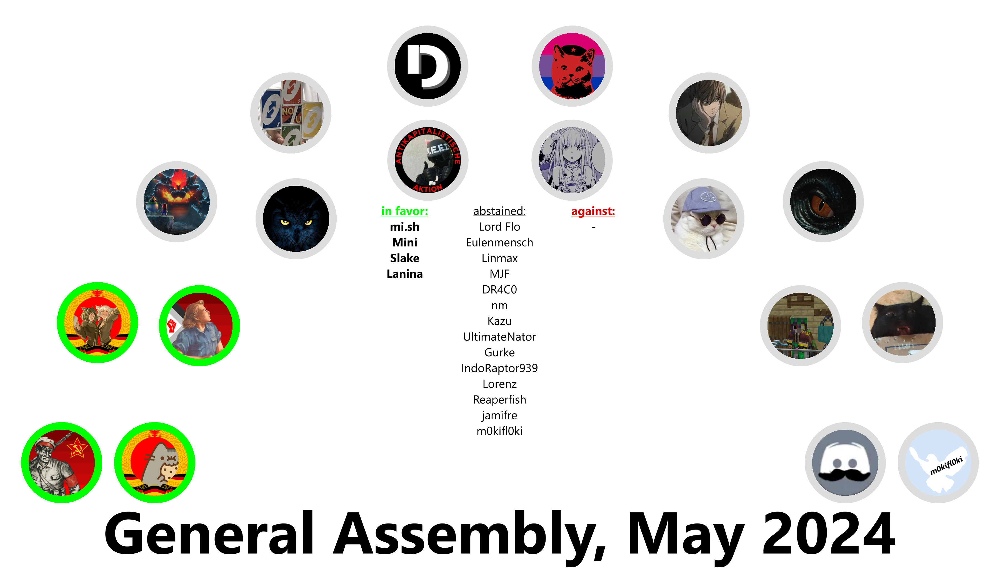

About one Year ago, we stopped supporting and eventually deleted our Discord Server to focus entirely on Revolt.
Today, the General Assembly has decided that this was ultimately a Mistake.
We will archive the Revolt Server and remove all Users.
We no longer think that Revolt is a good Tool for us. It is centralized and its quite obvious that the Software running on the official Instance is not entirely open.
The Bridge is down and noone even noticed. This is a clear Sign that we dont need our Revolt Server anymore.

'Revolution', our self-hosted Instance of Revolt, will not happen for now.
A lot of Things wont happen, actually. We are experiencing a lot of Issues with our ISPs and are simply unable to host anything anymore, despite having the necessary Ressources.
We are considering renting a Server in Russia to bypass this.